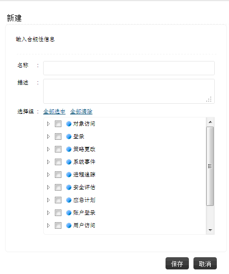
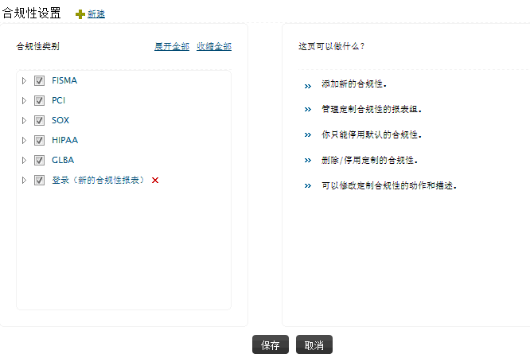

创建新的合规性报表
EventLog Analyzer为您提供灵活的合规性报表创建功能，使您可以根据需求创建自定义的合规性报表。
在EventLog Analyzer中通过客户端创建合规性报表，可通过以下菜单实现：
- 合规性页签 > +新建
- 设置页签 > 合规性管理 > 添加

-
输入新合规性报表的名称。
-
输入新的合规性报表的描述信息。
-
点击全部选中，选择所有的合规性动作，点击全部清除，取消选择的合规性动作。
-
选择需要的合规性动作前的复选框，点击展开图标可以显示子组，这样可以使组、子组的选择更加灵活。
-
点击保存按钮保存新的合规性报表。
定制已有的合规性报表
在EventLog Analyzer中通过客户端定制已有的合规性报表，可通过以下菜单实现：
- 合规性页签 >
编辑合规性
- 设置页签 > 合规性管理 > 编辑

-
通过合规性报表前的复选框选择任意数量的合规性报表，点击合规性报表前的展开图标展开组显示子组，这可以使组、子组的选择更加灵活。
-
点击全部选中，选择所有的合规性动作，点击全部清除，设置您所需的项目。
-
点击保存按钮保存自定义的合规性报表。
删除已有的自定义合规性报表
您可以删除您自己创建的合规性报表，在合规性报表设置页面，点击对应的合规性报表旁边的X图标既可以删除报表。您可通过以下菜单实现：
 |
说明：您只能禁用默认的合规性报表，不能删除它们。 |
|